前段时间刷爆很多人朋友圈的厦门最美餐厅Sky Dining，可以纵观180度的海景还拥有山顶平台的白色浪漫氛围。但关于这家餐厅究竟在哪里、要如何前去用餐，对于很多人来说好像真的是个谜。
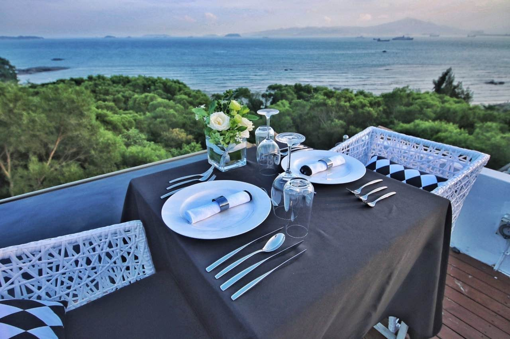
最早知道这家餐厅，全因为一个朋友要瞒着未婚妻偷偷来场求婚惊喜，于是找到了这家仿佛置身山海间的Sky Dining。这是一家一年只营业四个月，每天只能接待18名客人的餐厅，需提前2天预定，而且并不是订到了就能吃得到。
亲身前往Sky Dining才发觉，这里的“主体”并不是一间餐厅，而是一家名为山海观的民宿。
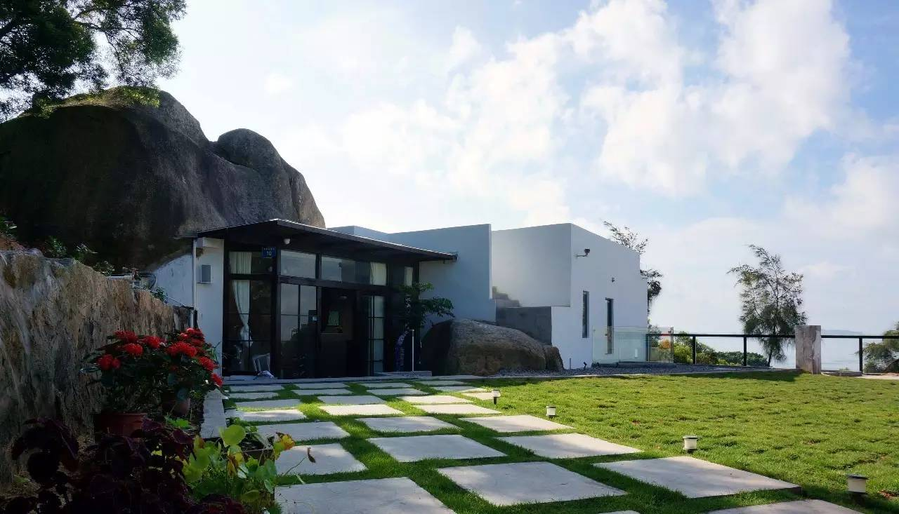
民宿位于曾厝垵片区，但距离你看到这个地名脑中立刻浮现出的那块大批游客、民宿扎堆、商铺良莠不齐的区域却还有三五分钟路程。沿路上山，不算太高，半山中矗立着一座太清宫道观，周边环境甚是清静，经过道路一波嶙峋的大岩石，便能迅速抵达。
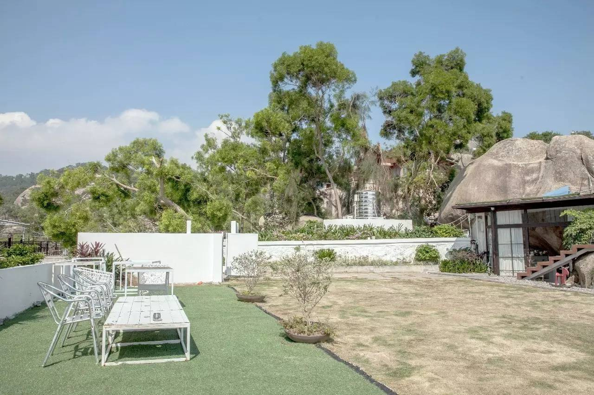
民宿依山而建，走进便能有种豁然开朗的感觉，站在一览无遗的户外平台，眼前尽是一片汪洋大海，往左看去则是满眼漫延开去的山林。在阳光的衬托下，真是好一幅山海之光景。
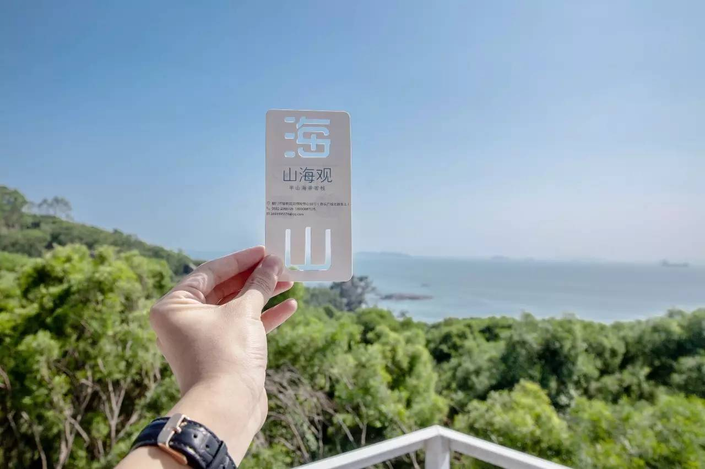
这里仅有八间客房，却搭配了占地两百平的观海平台，总面积四百多平米。能选到如此让人沉醉的地理位置做民宿，主理人之一的陈莉则坦言这完全是缘起于四年前的巧合——先是误打误撞在曾厝垵505号的一座闽南老厝里，开启了精品民宿主人的历程。
又在两年前，自觉在经营中对民宿渐渐有所体悟。于是，她开始寻找新地点，物色适合的场地启动第二家民宿。同样是机缘巧合，在寻觅了厦门周边多个区域后，经朋友介绍终于邂逅了曾山10号的简易民居，三位合伙人一进入现场，看到一大片无敌海景，便决定在此打造山海观。
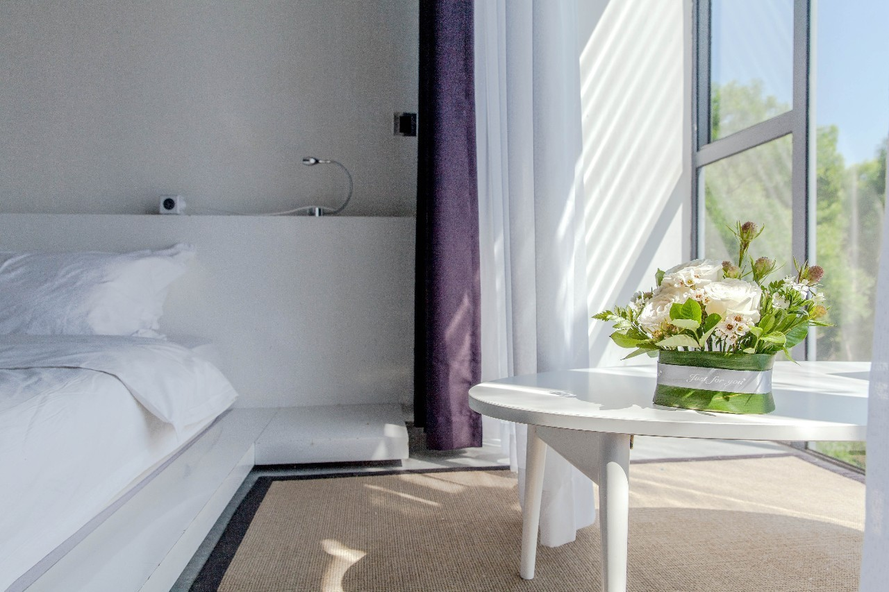
山海观在外观上选择了白色为主体建筑的基调，整体风格偏向线条简约的空间设计与布局。此处原有的大块岩石，在保持整体外观不变的前提下，设计师兼合伙人的柯一峰采取“以山入室”的方式进行改造。
进入民宿之内，迎面而来的前台背景便是一大片巨石，给人一种朴拙天然又不失现代化的美感，室内以黑白灰三种主色搭配，在山水间倒是显得颇有当下盛行的无印简约风。
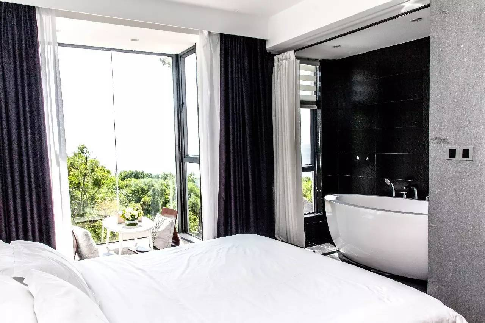
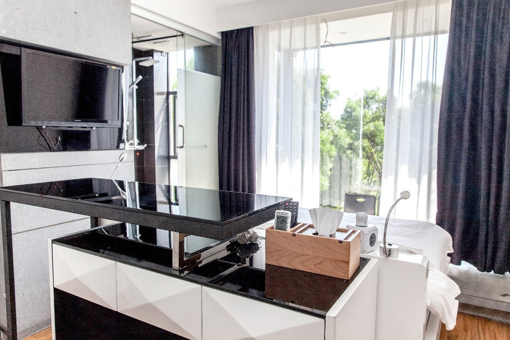
在通往客房的楼梯亦环着一大块岩石一路铺陈下去，不规则的空间布局，仿佛置身山洞，楼梯下方的小小空间，用绿植装点祼露的岩石，达到浑然天成的室内小景。为了避免岩石带来的阴冷感，设计师除了选用原木地板外，也在二楼空间开设天窗，让阳光充分倾洒而下，石头的粗粝清晰暴露眼前，完全不同于一楼洞穴的体验感，增加了采光效果，倒是让整间民宿有了居家的温馨感。
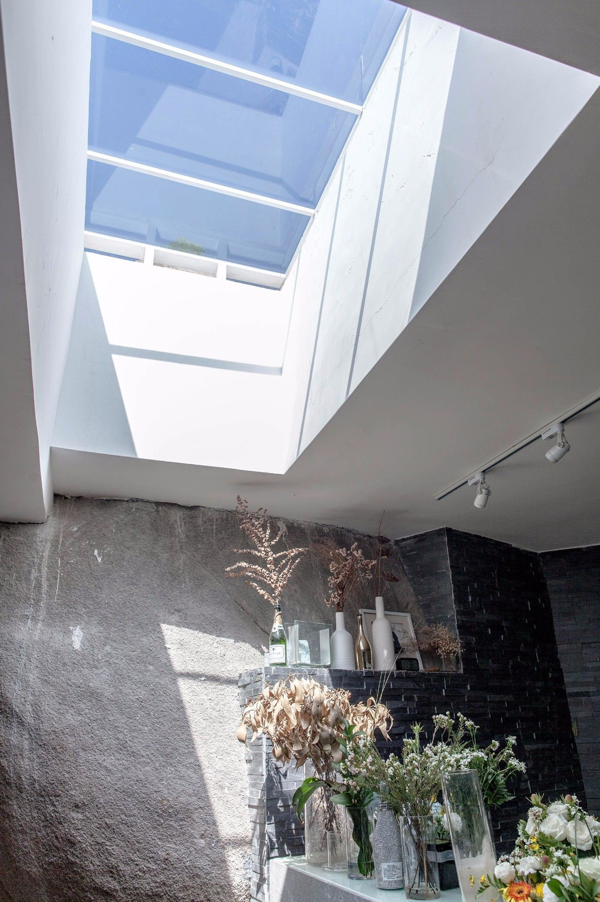
至于“网红” Sky Dining，在陈莉看来则是山海观民宿对于住客附加体验的一种精进。她希望山海观的体验也不只是局限在“住”上面，除了常规的露天电影放映外，在山海间仰望久违的星空作，如何进一步善用无敌海景的优势，一直是陈莉寻求民宿突破的关键所在。于是便有了Sky Dining的诞生。
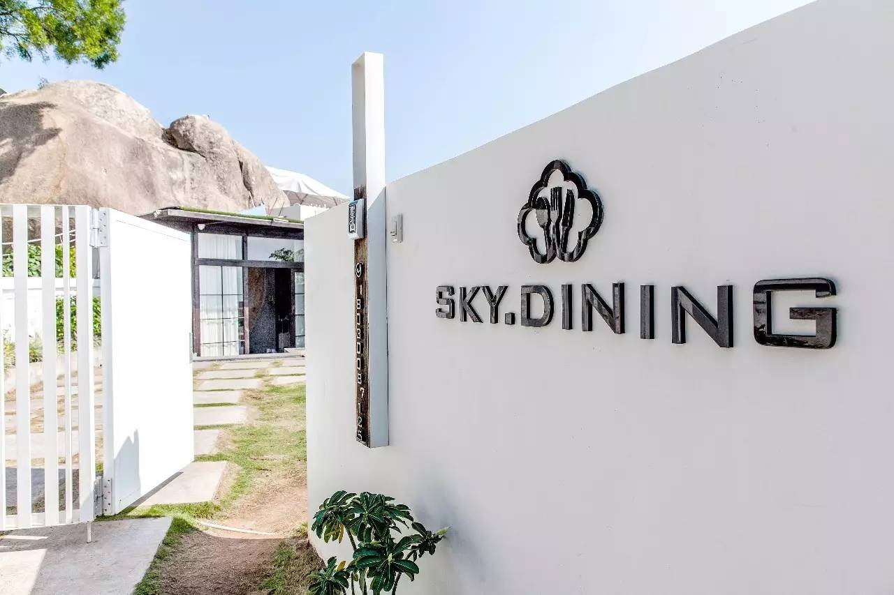
陈莉坦言这样的想法很浪漫，现实却很辛苦。之所以每年仅运营四个月时间且运营时间不定，全是因为这样美轮美奂的用餐体验对于环境的要求太高，而山顶露台受环境影响的不确定因素真的太多。而做民宿却玩起了餐饮，对于陈莉来说这样跨界的确比起传统餐饮有很多不同之处。
在菜品部分，Sky Dining特别邀请到乌克兰星厨Alexandr Nepop主理，不论从菜品还是服务上，每一个环节都力求完美，客人在此可以体验到主厨带来的最精致的异域美食。而与主厨搭档的行政主厨Jamal是地道的闽南人，因此在菜单中，客人亦可以品尝到有酱油味的芒果、东山的芦笋等各式在地小食。
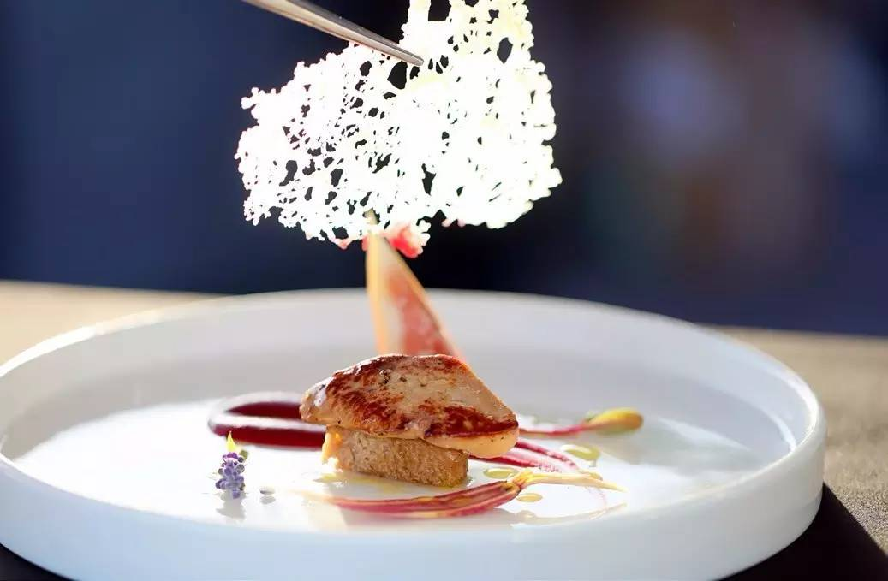
当然，Sky Dining的主打还在于定制式的西餐美食，特别是这里推出的新西兰牛排和澳洲M10牛肉眼，选以大火烤制，焦香的油花与唇齿间柔嫩的肉质，让人大快朵颐。另外，来自俄罗斯传统风味的鱼子酱组合，搭配俄式酸奶油、腌洋葱及自制黑麦面包，也是倍受客人喜爱的特色主打。
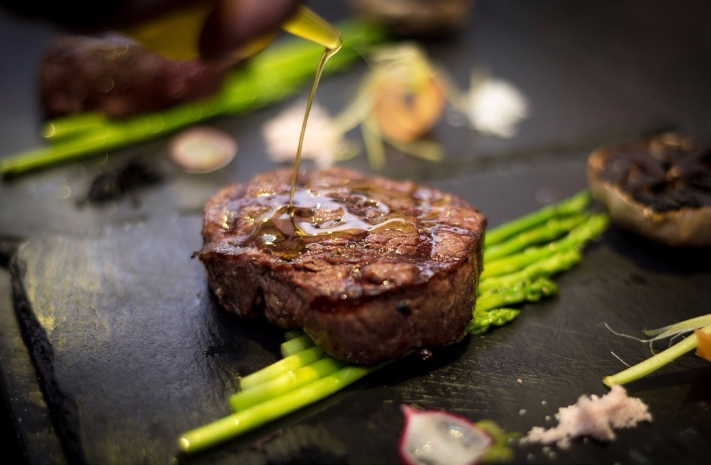
至于定制求婚、周年庆、party等附加服务，陈莉告诉我“我在这里运营的每一天都会发生很多不同的求婚、不同的浪漫时间。”在她看来，Sky Dining并不是专业的策划公司，但他们依旧愿意从与顾客们沟通的第一时间就开始了解对方的需求和想法，力求为前来的顾客打造一个难忘的消费体验。
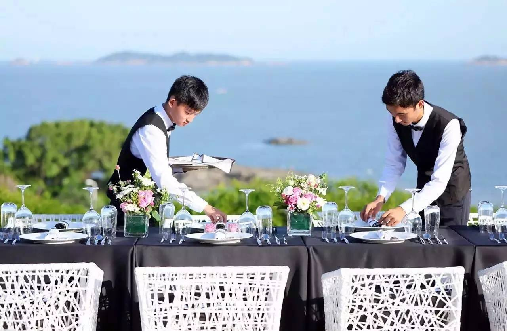
山海相拥，睡一张舒适的床，天际之间，享一份季节限定的用心。想必连许多本地市民都无法抗拒这样的魅力体验。
地址：思明区曾厝垵曾山10号
 330445074@qq.com
330445074@qq.com 12345
12345